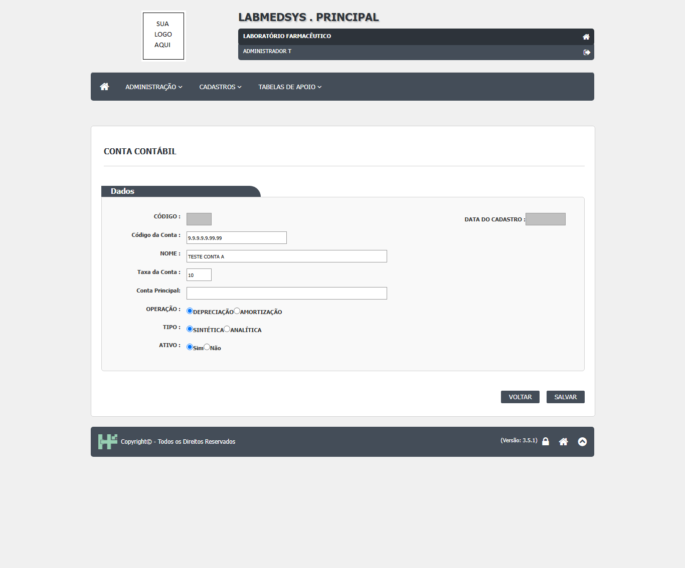
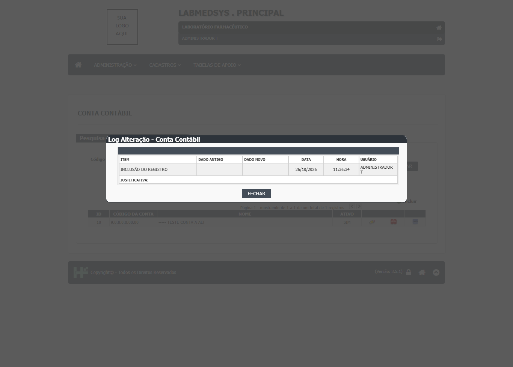
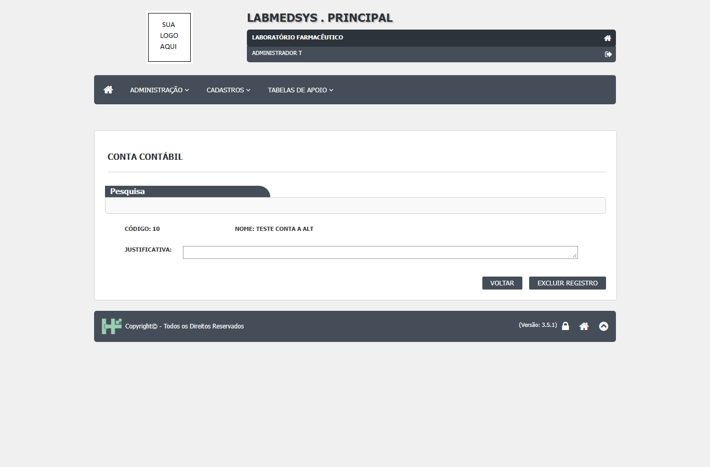
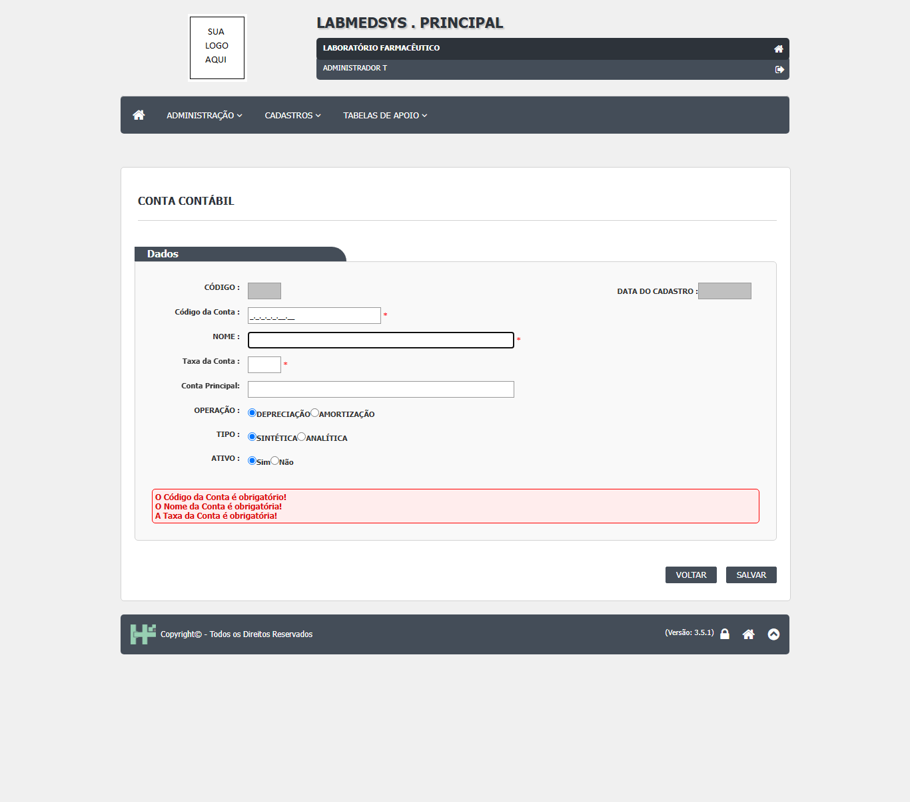
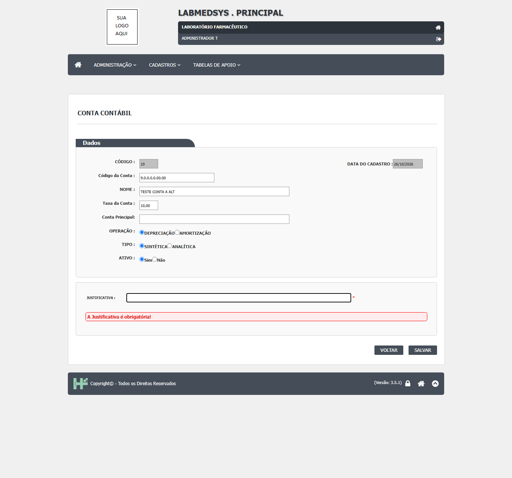
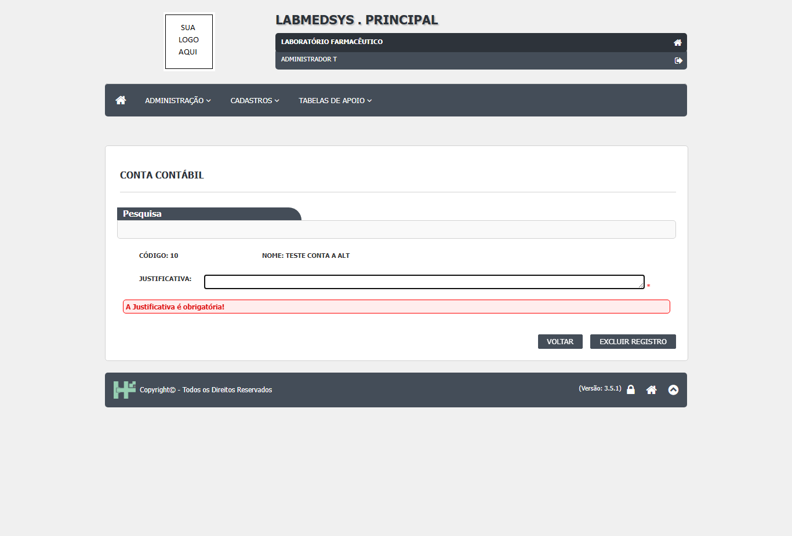

Para que serve
Cadastra o plano de contas contábil em árvore (por exemplo, 1.1.1.0.0.00.00 como conta mãe e as contas filhas abaixo dela). Cada conta tem código no formato 9.9.9.9.9.99.99, nome, taxa, tipo (sintética, que agrupa, ou analítica, que recebe lançamentos), operação (depreciação ou amortização), conta principal (a conta mãe) e situação. O código e a taxa servem ao cálculo de depreciação e amortização de bens: a biblioteca de Patrimônio, usada pelo Principal e pela Produção, lê as contas para isso (DepreciacaoRepository.cs:24-31; ContaContabilRepository.cs:120-143). Não foi verificado se alguma tela de Patrimônio está ativa nesta versão.
Quem usa e em que etapa do processo
Quem usa
- Contabilidade ou Financeiro (leitura da área; o sistema não diz).
- A biblioteca de Patrimônio lê as contas e suas taxas.
- Quem pode abrir, incluir, alterar, excluir, imprimir e ver o histórico está em "Quem pode usar (permissões)", mais abaixo.
Em que etapa do processo entra (tela 6 do menu Cadastros, módulo Principal)
- Pelo menu Cadastros. A lista abre vazia; é preciso clicar em Pesquisar.
- O formulário abre pela lista (Novo, Editar, Consultar).
O que acontece depois (para onde o trabalho segue)
- Salvar uma conta nova grava e mostra "Inclusão realizada com sucesso!".
- Salvar uma alteração exige a justificativa e grava; o histórico é montado depois da gravação, comparando a conta com ela mesma (ver Falhas).
- Excluir (na lista) pede a justificativa na tela, manda a conta para a lixeira e grava uma linha de histórico no objeto do Local físico, sem a justificativa.
Fonte: Resumo da tela e fluxo da tela (leitura do código e dos testes). O que for leitura da área precisa ser validado com a área.
Antes de começar (o que precisa existir)
Tenha o plano de contas em mãos: código de 7 níveis (9.9.9.9.9.99.99), nome, taxa, tipo e, se não for conta de primeiro nível, a conta principal. As contas de primeiro nível não têm conta principal.
Passo a passo
Situação das imagens (14/11/2026): imagens reaproveitadas dos testes de 26/10/2026 (rodada 3), cada uma conferida contra o texto. Sem imagem: a lista com a grade, o aviso de sucesso da inclusão, a conta analítica (a gravação deu erro), a inativação, a recusa de código repetido, o Excel e o relatório (a tela não os tem).
Tela de lista
- Passo 1. No menu Cadastros, abra Conta contábil. A tela mostra o quadro de pesquisa e uma área vazia. Clique em Pesquisar para listar (conta_contabil_lst.aspx.cs:198-215).
- Passo 2. Filtros: Código da conta, Nome (até 100 caracteres), Conta principal (digite duas letras para buscar), Tipo (TODAS, SINTÉTICA, ANALÍTICA) e Ativo (TODAS, SIM, NÃO) (conta_contabil_lst.aspx:44-87).
- Passo 3. A lista mostra ID, Código da conta, Nome e Ativo, com os ícones Editar, Consultar, Excluir e Ver Log, conforme a permissão (conta_contabil_lst.aspx:115-157). Mostra 10 contas por vez; use Anterior e Próximo para trocar de página (conta_contabil_lst.aspx.cs:414-428).
- Passo 4. Sem resultado, a tela diz "A pesquisa não retornou nenhum resultado." (conta_contabil_lst.aspx.cs:97).
Cadastrar uma conta
- Passo 5. Na lista, clique em Novo. Preencha o Código da conta (máscara 9.9.9.9.9.99.99), o Nome (até 255 caracteres), a Taxa, a Conta principal (digite duas letras e escolha na lista), a Operação (Depreciação ou Amortização), o Tipo (Sintética ou Analítica) e a Situação (conta_contabil_ed.aspx:48-111).

Figura 1: O formulário de inclusão da Conta Contábil preenchido: Código da Conta, Nome, Taxa da Conta, Operação, Tipo e Ativo, antes de salvar.
- Passo 6. Clique em SALVAR e responda SIM a "Confirma a inclusão do item?" (conta_contabil_ed.aspx.cs:124-143). O sistema recusa, com mensagem de erro, código fora do formato, conta repetida, tipo incompatível com o nível do código e conta principal que não combina com o código (ContaContabilService.cs:31-42).
Alterar, inativar e excluir
- Passo 7. Na lista, clique em Editar, mude o que precisar, preencha a Justificativa (obrigatória) e clique em SALVAR (conta_contabil_ed.aspx:129-130). Se a conta já tem contas filhas, o campo Código vem bloqueado (conta_contabil_ed.aspx.cs:94-105).

Figura 2: A janela "Log Alteração - Conta Contábil" mostrando só a linha "INCLUSÃO DO REGISTRO" (a tela não registra no histórico a mudança de taxa e de operação).
- Passo 8. Para inativar, mude Ativo para Não, justifique e salve.
- Passo 9. Para excluir, clique no ícone de excluir, preencha a Justificativa da exclusão, clique em SALVAR e responda SIM a "Confirma a exclusão do item?" (conta_contabil_lst.aspx.cs:119-127, 347-353 e 443-451). O sistema não confere se a conta tem filhas nem se está em uso.

Figura 3: O painel de exclusão: código, nome e o campo Justificativa, com os botões VOLTAR e EXCLUIR REGISTRO.
O que acontece ao confirmar ou salvar
- Salvar uma conta nova grava e mostra "Inclusão realizada com sucesso!" (conta_contabil_ed.aspx.cs:187-191 e 230-238).
- Salvar uma alteração exige a justificativa e grava; o histórico é montado depois da gravação, comparando a conta com ela mesma (ver Falhas) (conta_contabil_ed.aspx.cs:240-253).
- Excluir (na lista) pede a justificativa na tela, manda a conta para a lixeira e grava uma linha de histórico no objeto do Local físico, sem a justificativa (conta_contabil_lst.aspx.cs:306-345 e 397-411).
Registro em uso por outro cadastro (inativar ou excluir):
- Para excluir, clique no ícone de excluir, preencha a Justificativa da exclusão, clique em SALVAR e responda SIM a "Confirma a exclusão do item?". O sistema não confere se a conta tem filhas nem se está em uso.
O que o sistema recusa
- O Código da Conta é obrigatório! / O Nome da Conta é obrigatória! / A Taxa da Conta é obrigatória! / O Tipo da Conta Contábil é obrigatório! / A Situação é obrigatório! / A Operação da Conta Contábil é obrigatória!: Salvar sem o campo (conta_contabil_ed.aspx:52, 61, 69, 91, 101 e 111)
- A Justificativa é obrigatória!: Alterar sem justificativa (conta_contabil_ed.aspx:130)
- O campo Codigo é obrigatório. / O Codigo informado é inválido. / O campo Descrição é obrigatório.: Dados em branco ou fora do formato (ContaContabilFactory.cs:40-42)
- A Conta Contabil é inválida! / A Conta Contabil já foi cadastrada! / O Tipo da Conta Contabil é inválido! / A Conta Principal da Conta Contabil é inválida!: Regras de código, duplicidade, tipo e conta principal (ContaContabilService.cs:34, 37, 39 e 42 (inclusão); 71, 74, 76 e 79 (alteração))
- A Conta Contabil não foi encontrada.: Conta que não existe (ContaContabilService.cs:60)
- Erro ao processar a informação! (com "Detalhe do erro (+)"): Qualquer falha ao salvar (conta_contabil_ed.aspx.cs:198-203)
- Esta item já foi deletado anteriormente.: Excluir conta já na lixeira (Repository.cs:145-148 (framework))

Figura 4: Salvar com tudo em branco: mensagens vermelhas "O Código da Conta é obrigatório!", "O Nome da Conta é obrigatória!" e "A Taxa da Conta é obrigatória!".

Figura 5: Alterar sem Justificativa: mensagem vermelha "A Justificativa é obrigatória!" sobre o campo Justificativa.

Figura 6: Excluir sem Justificativa: o painel de exclusão mostra "A Justificativa é obrigatória!".
Quem pode usar (permissões)
- A função da tela é
CONTA CONTÁBIL(conta_contabil_lst.aspx.cs:36 e conta_contabil_ed.aspx.cs:28). Na árvore de permissões, o grupo Cadastros tem "Conta contábil (93)", com as ações Incluir, Alterar, Excluir, Imprimir/Excel e Consultar log (02-matriz-de-permissoes.md:157 e 103). - Na lista, Editar depende de Alterar, Excluir de Excluir, Ver Log de Consultar log, Novo de Incluir (ClassePaiLst.cs:192-257). O Imprimir e o Excel não aparecem para ninguém (conta_contabil_lst.aspx.cs:45-46).
- Nenhum usuário de teste foi usado nesta tela.
- O detalhe da conferência de acesso está na seção "Segurança e acesso" desta tela.
Cuidados e falhas conhecidas
- Nenhum defeito do registro DV-PRI está ligado a esta tela, porque ela não foi testada.
- (a confirmar no teste; gravidade proposta: Alta) O histórico da alteração compara a conta com ela mesma: a conta "antiga" é lida depois de gravar
- (a confirmar no teste; gravidade proposta: Alta) A exclusão grava o histórico no objeto TBL_LOCAL_FISICO (cópia de outra tela) e sem justificativa; a exclusão não aparece no histórico da conta e pode poluir o de um Local físico
- (a confirmar no teste; gravidade proposta: Alta) A justificativa da exclusão é exigida na tela e não é gravada em lugar nenhum
- (a confirmar no teste; gravidade proposta: Alta) A mudança da taxa e da operação (que alteram o cálculo de depreciação e amortização) não é comparada para o histórico
- A tela não faz: Não tem relatório nem exportação: os botões Imprimir e Excel nunca aparecem.
- A tela não faz: Não oferece as operações "Exaustão" e "Sem operação", embora o código as conheça.
- A tela não faz: Não mostra a taxa com as quatro casas que o banco guarda: mostra duas.
- A tela não faz: Não registra a justificativa da exclusão nem a mudança da taxa e da operação no histórico (ver Falhas).
- As imagens deste manual vêm do teste de 26/10/2026 (rodada 3). Os resultados desse teste ainda precisam ser conferidos com a seção "Casos de teste" desta tela, que pode ter sido escrita antes dele.
Ícones e botões da lista
Inclui também os botões do formulário.
| Ícone ou botão | O que faz | Quando aparece |
|---|---|---|
| Pesquisar | Lista as contas não excluídas que batem com o filtro, 10 por página | Sempre, na lista |
| Limpar | Esvazia os filtros e esconde a lista | Sempre, na lista |
| Anterior, Próximo | Troca de página | Depois de uma pesquisa com resultado |
| Novo (Incluir) | Abre o formulário vazio | Lista, se o usuário tem Incluir |
| Editar, Consultar | Abrem o formulário | Em toda linha (Editar com a ação Alterar) |
| Excluir | Abre o painel de justificativa; SALVAR pede confirmação e manda para a lixeira | Em toda linha, se o usuário tem Excluir |
| Ver Log | Abre a janela de histórico da conta | Em toda linha, se o usuário tem Consultar log |
| Imprimir e Excel | Apontariam para uma página de relatório que não existe | Nunca aparecem |
| SALVAR | Pede confirmação e grava | Formulário, se o usuário pode alterar |
| VOLTAR | Volta à lista sem gravar | Sempre, no formulário |
Campos da tela
Caminhos das fontes na seção Resumo da tela.
| Campo na tela | Tipo | Obrigatório | Regra, limite ou valores possíveis | Fonte |
|---|---|---|---|---|
| Pesquisa: Código da conta | Texto | Não | Procura dentro do código | conta_contabil_lst.aspx:44-47; ContaContabilRepository.cs:24-27 |
| Pesquisa: Nome | Texto de até 100 caracteres | Não | Procura dentro do nome, em maiúsculas | conta_contabil_lst.aspx:52; conta_contabil_lst.aspx.cs:204 |
| Pesquisa: Conta principal | Busca por texto | Não | Duas letras para buscar; lista também contas inativas | conta_contabil_lst.aspx:74-79; wsAutoComplete.asmx.cs:123-128 |
| Pesquisa: Tipo | Lista | Não | TODAS, SINTÉTICA, ANALÍTICA | conta_contabil_lst.aspx:65-69 |
| Pesquisa: Ativo | Lista | Não | TODAS, SIM, NÃO | conta_contabil_lst.aspx:84-88 |
| ID | Texto bloqueado | Não se aplica | Gerado pelo banco | conta_contabil_ed.aspx:44 |
| Data do cadastro | Texto bloqueado | Não se aplica | Data de criação | conta_contabil_ed.aspx:46 |
| Código da conta | Texto com máscara 9.9.9.9.9.99.99 | Sim | "O Código da Conta é obrigatório!". Até 15 caracteres no banco. Único entre as contas não excluídas. Bloqueado se a conta tem filhas | conta_contabil_ed.aspx:52-54; conta_contabil_ed.aspx.cs:94-105; ContaContabilFactory.cs:41; TBL_CONTA_CONTABIL.sql:4 |
| Nome | Texto de até 255 caracteres | Sim | "O Nome da Conta é obrigatória!". Gravado em maiúsculas | conta_contabil_ed.aspx:60-61; ContaContabilFactory.cs:29 |
| Taxa | Texto de até 8 caracteres | Sim | "A Taxa da Conta é obrigatória!". Sem faixa conferida. O banco guarda 4 casas decimais e no máximo 7 dígitos; a tela mostra 2 casas | conta_contabil_ed.aspx:68-69; conta_contabil_ed.aspx.cs:83; TBL_CONTA_CONTABIL.sql:16 |
| Conta principal | Busca por texto | Não | Só aceita a conta mãe coerente com o código; vazia para contas de primeiro nível | conta_contabil_ed.aspx:77-81; ContaContabilPossuiContaPrincipalInvalidoSpecification.cs:34-72 |
| Operação | Opções | Sim | DEPRECIAÇÃO (vem marcada) ou AMORTIZAÇÃO | conta_contabil_ed.aspx:86-91 |
| Tipo | Opções | Sim | SINTÉTICA (vem marcada) ou ANALÍTICA. Sintética não pode ser do último nível; analítica só do último nível | conta_contabil_ed.aspx:96-101; ContaContabilPossuiTipoInvalidoSpecification.cs:27-41 |
| Situação (Ativo) | Opções Sim ou Não | Sim | Vem como Sim. "A Situação é obrigatório!" | conta_contabil_ed.aspx:106-111 |
| Justificativa | Texto de até 255 caracteres | Sim, na alteração | "A Justificativa é obrigatória!" | conta_contabil_ed.aspx:129-130 |
| Justificativa da exclusão | Texto | Sim, na exclusão | Cobrada na tela; não é gravada | conta_contabil_lst.aspx.cs:347-353 e 397-411 |
Botões e ações
| Botão ou ação | Quando aparece | O que faz | Para onde leva a conta | Fonte |
|---|---|---|---|---|
| Pesquisar | Sempre, na lista | Lista as contas não excluídas que batem com o filtro, 10 por página | Não muda | conta_contabil_lst.aspx.cs:198-215 |
| Limpar | Sempre, na lista | Esvazia os filtros e esconde a lista | Não muda | conta_contabil_lst.aspx.cs:217-241 |
| Anterior, Próximo | Depois de uma pesquisa com resultado | Troca de página | Não muda | conta_contabil_lst.aspx.cs:414-428 |
| Novo (Incluir) | Lista, se o usuário tem Incluir | Abre o formulário vazio | Nova | conta_contabil_lst.aspx.cs:193-196 |
| Editar, Consultar | Em toda linha (Editar com a ação Alterar) | Abrem o formulário | Não muda | conta_contabil_lst.aspx.cs:128-133 |
| Excluir | Em toda linha, se o usuário tem Excluir | Abre o painel de justificativa; SALVAR pede confirmação e manda para a lixeira | Excluída | conta_contabil_lst.aspx.cs:119-127, 306-345 e 430-451 |
| Ver Log | Em toda linha, se o usuário tem Consultar log | Abre a janela de histórico da conta | Não muda | conta_contabil_lst.aspx.cs:134-146 |
| Imprimir e Excel | Nunca aparecem | Apontariam para uma página de relatório que não existe | Não muda | conta_contabil_lst.aspx.cs:45-46 e 244-288 |
| SALVAR | Formulário, se o usuário pode alterar | Pede confirmação e grava | Nova, alterada ou inativada | conta_contabil_ed.aspx.cs:117-143 e 184-253 |
| VOLTAR | Sempre, no formulário | Volta à lista sem gravar | Não muda | conta_contabil_ed.aspx.cs:157-160 |
Mensagens do sistema
Nenhuma das mensagens abaixo foi vista numa tela; todas vêm do código.
| Mensagem (texto exato do código) | Quando aparece | Fonte |
|---|---|---|
| A pesquisa não retornou nenhum resultado. | Lista vazia | conta_contabil_lst.aspx.cs:97 |
| O Código da Conta é obrigatório! / O Nome da Conta é obrigatória! / A Taxa da Conta é obrigatória! / O Tipo da Conta Contábil é obrigatório! / A Situação é obrigatório! / A Operação da Conta Contábil é obrigatória! | Salvar sem o campo | conta_contabil_ed.aspx:52, 61, 69, 91, 101 e 111 |
| A Justificativa é obrigatória! | Alterar sem justificativa | conta_contabil_ed.aspx:130 |
| O campo Codigo é obrigatório. / O Codigo informado é inválido. / O campo Descrição é obrigatório. | Dados em branco ou fora do formato | ContaContabilFactory.cs:40-42 |
| A Conta Contabil é inválida! / A Conta Contabil já foi cadastrada! / O Tipo da Conta Contabil é inválido! / A Conta Principal da Conta Contabil é inválida! | Regras de código, duplicidade, tipo e conta principal | ContaContabilService.cs:34, 37, 39 e 42 (inclusão); 71, 74, 76 e 79 (alteração) |
| A Conta Contabil não foi encontrada. | Conta que não existe | ContaContabilService.cs:60 |
| Confirma a inclusão do item? / Confirma a alteração do item? / Confirma a exclusão do item? | Antes de gravar | conta_contabil_ed.aspx.cs:133 e 137; conta_contabil_lst.aspx.cs:450 |
| Inclusão realizada com sucesso! / Alteração realizada com sucesso! / Exclusão realizada com sucesso! | Depois de gravar | conta_contabil_ed.aspx.cs:190 e 195; conta_contabil_lst.aspx.cs:326 |
| Erro ao processar a informação! (com "Detalhe do erro (+)") | Qualquer falha ao salvar | conta_contabil_ed.aspx.cs:198-203 |
| Esta item já foi deletado anteriormente. | Excluir conta já na lixeira | Repository.cs:145-148 (framework) |
Quem pode fazer o quê
Ainda não levantado para esta tela
O quadro "Quem pode fazer o quê" é preenchido a partir de testes de tela por perfil (nível, área e etapa do registro), nunca por suposição. Esta tela ainda não passou por esse levantamento.